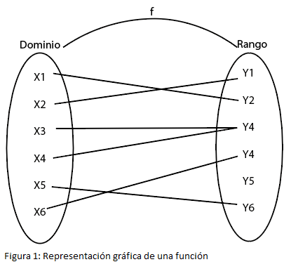
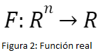
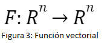
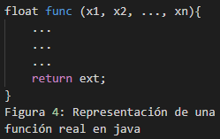
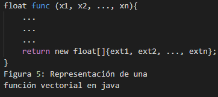

Funciones
En matemáticas, una función es una regla de correspondencia que relaciona los elementos de un primer conjunto con los de un segundo conjunto.
El primer conjunto o el conjunto inicial es conocido como dominio, mientras que el segundo conjunto o conjunto final es conocido como rango.
Una característica de las funciones es que a cada valor del dominio le corresponde un solo valor del rango. Por lo general, tiende a representarse de la
siguiente forma:
En donde:
f: función
A: dominio
B: rango

Algunas de las funciones matemáticas más utilizadas son las que retornan un solo valor y las que retornan un grupo de valores que serán manejadas como
unidad o como vectores.
Una característica del primer tipo de funciones es que sin importar el conjunto del dominio, el valor de salida siempre será un número real. El dominio bien
puede ser el conjunto de los reales, complejos o una variable vectorial. Una forma de representar este tipo de funciones puede ser la siguiente:

El segundo tipo de funciones tienen la característica de que su valor de llegada es un arreglo de valores. Matemáticamente son conocidas como funciones vectoriales.
Pueden ser representadas de la siguiente forma.

Funciones Computables
Computacionalmente hablando, para que una función sea computable debe existir un algoritmo que dada la entrada, un valor perteneciente al rango, se llega
al valor de llegada correspondiente a esa función. A todas las funciones que se pueden calcular matemáticamente se les dio el nombre de funciones efectivamente calculables.
Estas funciones efectivamente calculables se identifican como funciones computables.
Para aclarar las ideas, necesitamos definir intuitivamente un formalismo de computación, o simplemente formalismo, como la descripción de un sistema en el que
se puede llevar a cabo unos cálculos. Por ejemplo, todo lenguaje de programación es un formalismo de computación, al igual que una Máquina de Turing o una Función
Recursiva, lo es.
La idea de algoritmo que Turing tenía en la cabeza era algo como: un algoritmo es una serie de instrucciones con las siguientes propiedades:
- El número de instrucciones es finito, es decir, un algoritmo se puede escribir en su totalidad en una porción finita de espacio, ya sea una hoja de papel o un disco duro.
- Cada instrucción tiene un efecto limitado, es decir, no puede modificar el estado de algo que está fuera de su alcance.
- La computación se desarrolla en pasos individuales (una instrucción a la vez) y discretos.
- Los pasos son deterministas: dependen únicamente de un número finito de pasos previos y de una cantidad finita de datos
- No hay límite al número de pasos ni a la cantidad de memoria necesaria para almacenar los datos (finitos) iniciales, intermedios y finales.
Para representar las funciones efectivamente calculabes en forma computacional, se utilizan herramientas de programación; en donde estará especificado el algoritmo o las instrucciones a seguir
para llegar al valor perteneciente al rango. Estas herramientas son conocidos como lenguajes de programación, ya sea de alto o bajo nivel, como lo son java, python, c, lenguaje ensamblador,
entre otros. Cada lenguaje sigue su propia sintaxis definida por su desarrollador.
La siguiente imagen corresponde a la representación general de una función real de variable vectorial en lenguaje java.

Mientras que la siguiente imagen corresponde a una función vectorial de variable vectorial.

Tesis de Church-Turing
Esta tesis en distintas versiones equivalentes: por ejemplo, la Tesis de Church-Turing es la versión más conocida, y sólo se refiere a las MTs: Cualquier función que se pueda calcular es
Turing-computable, es decir, existe una MT que la calcula.
Hechos de la Tesis Church Turing
- Toda función efectivamente calculable puede ser calculada por una MT, una Función µ-Recursiva o un programa while.
- Las MTs se consideran como el formalismo que mejor describe la idea de efectiva computabilidad.
Máquina de Turing
La primera definición de Máquina de Turing se encuentra en el artículo del mismo Alan M. Turing del 1936 “On Computable Numbers, with an Application to the Entscheidungsproblem”.
En esté artículo se introduce la idea de Máquina de Turing, la máquina universal, los números computables, y el problema de la parada. Finalmente, el material introducido se
aplica al Entscheidungsproblem o Problema de la Decisión. Turing se apoya en la aritmetización de Gödel.
Intuitivamente, una Máquina de Turing es una cinta infinita (tiene un inicio, pero no un fin) de casillas iguales. Una cabeza se mueve sobre la cinta: en cada paso, se puede mover
como mucho una casilla hacia la derecha o una hacia la izquierda. La cabeza puede leer, escribir o borrar símbolos en la casilla en la que se encuentra (no puede observar otras
casillas ni actuar sobre ellas). La cabeza se encuentra en cada instante en un estado interno y, en cada paso, actúa según este mismo estado y el símbolo leído en la cinta. La
acción elegida en cada paso consiste en escribir un símbolo nuevo en la cinta o en mover la cabeza, y se acompaña a un cambio del estado interno. Más formalmente, una Máquina
de Turing (MT) es una quíntupla hK, Σ, s, H, δi donde:
- K es el conjunto finito de los estados internos de la cabeza.
- Σ es el conjunto finito de los símbolos que pueden aparecer en la cinta.
- s ∈ K es el estado inicial.
- H ⊆ K es el conjunto de los estados finales: normalmente incluye el estado h de terminación normal (es decir, el estado en el que la cabeza no tiene nada más que hacer
y termina su trabajo) y el estado e de error (es decir, el estado en el que se encuentra la cabeza cuando algo ha ido mal).
- δ es la función de transición: su dominio es2 (K \ H) × Σ, es decir, el estado actual (que no puede ser un estado final) y el símbolo leído en la cinta; su codominio es
K × (Σ ∪ {←, →}), es decir, δ devuelve el nuevo estado interno y una acción a ejecutar (escribir un símbolo en la cinta o mover la cabeza).
El significado de δ es el siguiente: su dominio representa el input (la condición inicial) en cada paso: la cabeza se encuentra en un estado interno q ∈ K \ H (es decir, no
final) y observa el símbolo σ ∈ Σ en la casilla donde se encuentra. El resultado (q ′ , x) = δ(q, σ) es la acción ejecutada, o paso: la cabeza pasa del estado q al estado q ′ y
si x ∈ Σ entonces escribe el símbolo x en la cinta, y no se mueve
si x =← entonces da un paso a la izquierda
si x =→ entonces da un paso a la derecha.
El conjunto Σ incluye un símbolo ⊲ que marca el inicio de la cinta. Toda Máquina de Turing, al encontrar este símbolo, se mueve inmediatamente hacia la derecha sin cambiar de estado.
Σ también incluye el símbolo “␣”, que indica que la casilla está vacía.
Composición de Máquinas de Turing
Cuando hablamos de componer Máquinas de Turing no pensamos en distintas MTs, cada una con su cabeza, cinta y función de transición, que se comunican
entre ellas a través de algún sofisticado protocolo. Hablamos de fusionar distintas funciones de transición, cada una dedicada a realizar una parte de la computación principal en una
única MT con una única cabeza y una única cinta.
Una configuración es una descripción instantánea de la computación en un momento dado: incluye el contenido de la cinta leída hasta el momento; la posición de la cabeza en la
cinta; y su estado interno. La condición “leída hasta el momento” es fundamental, porque la cinta es infinita y representar su contenido sería imposible.